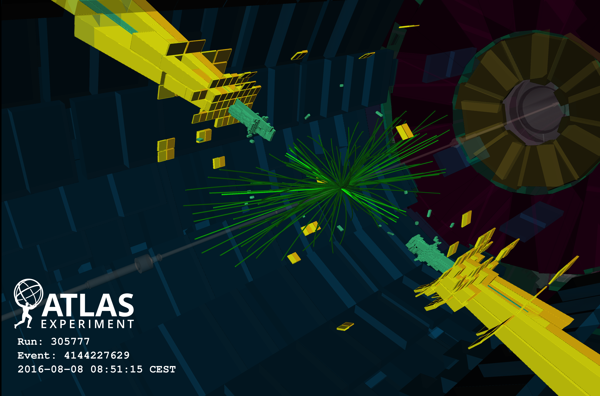
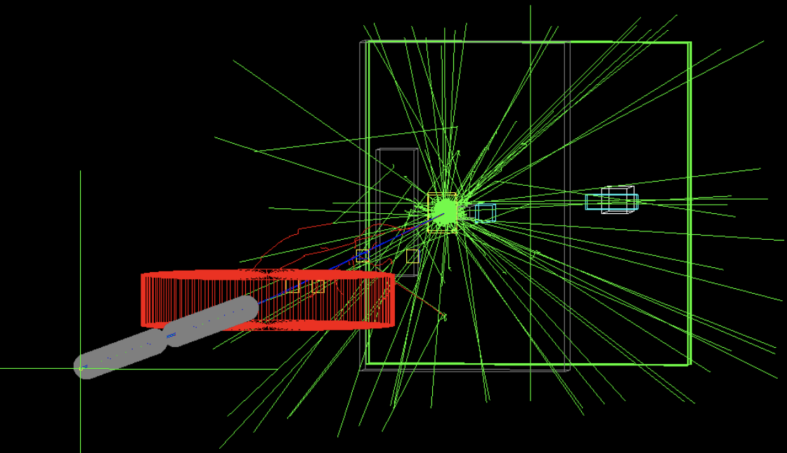
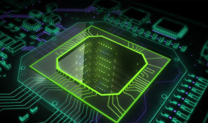

Matteo Bauce
I.N.F.N. Researcher - Sezione di Roma
Uniroma1
Dipartimento di Fisica
P.le A. Moro, 2, 00185, Roma - Italy
Edificio G. Marconi, stanza 252
matteo.bauce@roma1.infn.it
(+39) 06 4991 4328 CERN
Espl. des Particules 1, 1217
Meyrin - Switzerland
32/S-A14
matteo.bauce@cern.ch
(+41) 22 76 75075
Research activity
During the early part of my research activity (PhD) I joined the CDF collaboration (Fermilab, USA) in the precise measurement of Standard Model observables and search for hints of new physics. I dedicated most of my time studying the production of Z boson pairs in proton-antiproton collisions provided by the Tevatron accelerator. This lead then to the search of the SM Higgs boson in final states involving such massive Z bosons.
As a postdoc I joined the Atlas collaboration at CERN (Geneva, CH), contributing to the exploration of exotic models beyond the Standard Model, and focusing on the search of the other massive bosons predicted in the Higgs sector according to Two Higgs Doublet Models. I've been a member of the GPU Application Project (GAP), investigating the application of new technologies such Graphic Processing Units (GPU) in the realtime selection systems of HEP experiments or in medical imaging (NMR, PET, CT).
If you're interested in more details about my research activity, feel free to contact me via email.
If you're a student, there are several thesis topics related to the research activity, even though not explicitely listed here.
Atlas
I joined the Atlas collaboration as a postdoc at the University of Rome "Sapienza", few months after the discovery of the SM predicted Higgs boson. I'm investigating possible exotic extensions of the SM, that can be observed at the energy scale of the collisions produced by the LHC. I dedicated to search for Two Higgs Doublet Models, that extend the Higgs sector with additional massive bosons of various charge and spin-parity properties, looking at signatures involving additional pseudo-scalar particles (A, H) decaying to pair of massive bosons (A→Zh).
From the beginning of LHC Run II I focused on the search for new exotic resonances, exploring the kinematic regime made available by the increased center-of-mass collision energy. Investigation of final states containing hadronic jets can provide clear signatures of new physics hints through resonance evidences of kinematic deviations from the QCD SM background.
LEMMA
I'm part of a project called LEMMA and it's topical effort MAT, which is studying possible scheme for low-emittance Muon Collider. Such valid alternative to proton-driven muon beam production is based on a low-emittance muon beam production through positron beam collision on a target. The muon pair production through ee→mumu reaction has smaller emittance but lower production cross section compare to the proton driven method. Two test beam campaings have been succesfully carried out at SPS CERN facilities to investigate this production scheme.
GAP
I've been part of a granted R&D project called GAP, studying the possible application of GPU (Graphic Processing Units) in real time enviroments regarding high energy physics experiments and medical imaging.
The aim of the GAP project is the deployment of Graphic Processing Units (GPU) in real-time applications, ranging from high-energy physics online event selection (trigger) to medical imaging reconstruction. The final goal of the project is to demonstrate that GPUs can have a positive impact in sectors different for rate, bandwidth, and computational intensity. Most crucial aspects currently under study are the analysis of the total latency of the system, computational algorithms optimisation, and integration with the data acquisition systems. I'm focusing on the application of GPUs in asynchronous trigger systems, employed in the high-level triggers of typical LHC experiments. Some specific trigger algorithms can be naturally parallelized and thus benefit from the implementation on the GPU architecture, in terms of the increased execution speed and more favourable dependency on the complexity of the analyzed events. Such improvements are particularly relevant for the foreseen LHC luminosity upgrade where highly selective algorithms will be crucial to maintain a sustainable trigger rates with very high expected pileup.
CDF
During the MS and the PhD I dedicated to the research in High Energy Physics at Colliders, working at the CDF experiment at Fermilab. I investigated particle production in hadronic collisions, testing the Standard Model predictions in the electroweak sector and searching for new physics evidence coming from the electroweak symmetry breaking. I studied the production and decay of pair of massive bosons, in particular ZZ production. At CDF I carried out the measurement of the ZZ production cross section in two leptonic decay modes, exploiting the full dataset collected during the entire Tevatron run. I joined the searches for the Higgs boson done at CDF by looking for the decay of that particle to a ZZ pair, detected through four lepton produced in the final state. I dedicated part of my time to the operational duties for the CDF detector maintenance and R&D activity involving new technology application to HEP experiments trigger systems. We studied the feasibility of the application of GPUs in real-time decision systems for particle collision data-taking, improving the performances of particle reconstruction in low latency environment. I've been part of the CDF collaboration towards it's final steps of activity, when the data-taking period ended as a consequence of the Tevatron shut down.